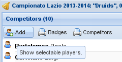
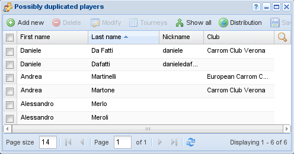

Players management¶
The players are obviously the main protagonists of the system: up to version 3 they could
also have an authenticated role, but in SoL 4 that has been superseded by users. Only a few users have the permission to manage the
players in the database.
Insert and edit¶
First name, last name and nick name¶
Player's first name and last name are mandatory, while
nickname may be used to disambiguate homonyms. When changes are committed SoL does
check for the presence of players with a similar name to avoid duplicates.
Hint
Usually the nickname of the player is shown in the interface and on printouts. When
the nickname is used for disambiguation, we suggest to compose it using the last name
plus the first letter of the first name, or the other way around, possibly dropping
spaces or quote characters: SoL recognizes these cases and omits the nickname, with
the goal of reducing clutter in the interface and printouts.
In other words, for the player “John De Beers”, in the following cases the nickname will be omitted:
johnde beersdebeersjdebeersjde beersdebeersjde beersjjohnddjohn
Sex, birthdate, nationality, club, language and email¶
Player's sex, birthdate, nationality and club are optional and used to compute different kinds of ranking, while language and email can be used to send email messages.
Privacy¶
The field agreed privacy is an explicit acknowledgment that the player gave the
permission to be recognizable in publicly accessible views (i.e., visible by anonymous
visitors), primarily the LIT interface.
The logic used to establish whether the name of the player appears in clear or obfuscated is the following:
when he explicitly made the choice, player's firstname, lastname, sex and portrait will appear in clear in the positive case, otherwise obfuscated;
on the contrary, when he did not make a specific choice,
SoLimplicitly assumes the positive case if the player participated to any tournament after January 1, 2020: this is backed by the decision taken by the ECC that anybody who wishes to play in tournaments organized by affiliated clubs have to agree that his data can be used on related websites.
Note
For obvious reasons, the player's full name appears in clear in the tournaments management user interface, even when he did not give the permission.
Citizenship¶
In order to be accepted as a participant to international events very often a player must have the citizenship of the country he plays for, and usually he must be affiliated to the federation of the same country.
Owner¶
The user who is responsible of the player data, usually the one that inserted that particular record: the information related to the player are changeable only by him (and also by the administrator of the system).
Portrait¶
The portrait may be any image (preferred formats are .png, .jpg or
.gif) and will be used in his personal page. Even if the image will be scaled as needed, it
is recommended to assign reasonable sized images (see the footnote on the clubs emblem).
Tourney registration¶

Adding other players¶
When you prepare a new tournament and want to subscribe the participant players, the add… action of the Competitors panel on the left of the tourney window will open the players window, where you can select one or more players (the usual shift-click and ctrl-click allow to extend the selection).
The grid automatically shows only the players not yet present in the current tourney. By default it also shows only the players who participated to at least one event organized by the same club of the current tourney in the last year: there is a Show all players button in the lower right corner to toggle between this view and the show all view.
To add the selected players you can drag and drop them into the left panel of the tourney's management window, or more simply you can use the Insert selected players button, if present.
Merging players¶

Potentially duplicated players¶
Sometime a player gets registered twice (or more) with slightly different names, for whatever reason. The typical case is when the same player participates to different tourneys: being known with different names, his results cannot be correctly summarized in the championship's ranking, where he appears more than once, with different aliases.
In this situation a merge is needed, that is, his various aliases must be unified into a single person, possibly that with the right and complete name, his canonical name; also, those names must be replaced in every tourney he participated to with the canonical one and finally deleted from the database.
This can be done by selecting the wrong aliases to be unified and ALT-dragging
(that is, dragging the selected names keeping the ALT key pressed) them over the right
name. You must of course filter the players so that all the names are visible in a single page
at the same time, possibly prepending a temporary marker (for example **) to the players'
last name and filtering on that marker.
The server application will ensure that the operation is possible, for example you'll get an error if the replacement would cause a conflict.
To make the task easier, the Duplicates action in the menu may be handy, because it applies a particular filter to the list of players showing only those that appear to be duplicated: the first and the last name of the players are compared and only those with very similar names, tipically differing only by a couple of letters, are shown.
Warning
Do not perform this cleanup while you are setting up a new tourney, as this may easily do the wrong thing with regard to not-yet-committed changes: close the tourney management window!